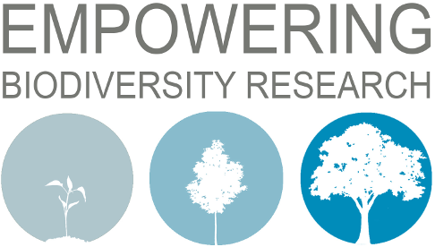
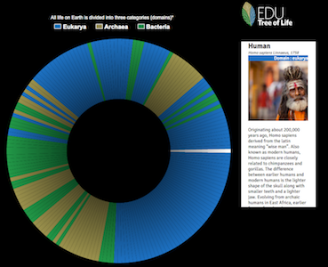
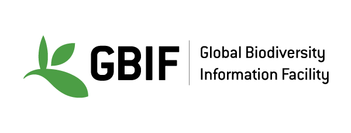
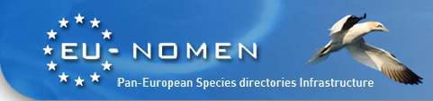
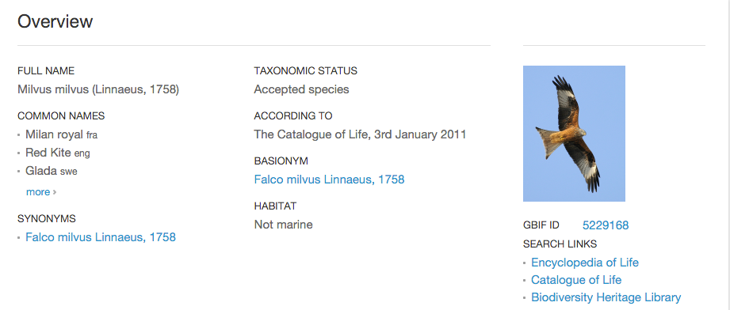

Taxon Services
Data cleaning/publishing Workshop
9th November 2015
André Heughebaert
Belgian Biodiversity Platform 
Summary
Scientific names
Binomial names in latin : genus species author, year
Homo sapiens Linnaeus, 1758
Scientific names
Scientists believe that Earth is home
to about 8.7 million different forms of life,
and of those
only about 1.8 million have been identified.

Scientific names
Acaridae Ewing & Nesbitt, 1942
Acarus nidicolus Griffiths, 1970
Accipiter cirrocephalus subsp. cirrocephalus
Accipiter madagascariensis J. Verreaux, 1833
Acmaea pustulata Helbling, 1779
Acmaeodera (Acmaeodera) revelierei Mulsant & Rey, 1859
Acmaeoderella (Carininota) flavofasciata (Piller & Mitterpacher, 1783)
Acmaeoderella (Carininota) flavofasciata placida (Baudi, 1870)
Well formated names?
Existing names?
Accepted names?
Nomenclature(s)
- ICZN (18 chapters, 90 articles, 150+ pages) -
International Commission on Zoological Nomenclature - ICBN - International Code of Botanical Nomenclature
- ICN - International Code of Nomenclature for algae, fungi, and plants
- ICNCP - International Code of Nomenclature for Cultivated Plants
- ICNB - International Code of Nomenclature of Bacteria
- ...
All sort of names
- valid (Animalia, Protozoa, Bacteria, and Archaea)
or accepted (Plantae, Chromista, and Fungi) - invalid (Animalia, Protozoa, Bacteria, and Archaea):
homonym & junior synonymjunior homonym, junior synonym, misapplied, nomen dubium, nomen oblitum, original name/combination... - or not accepted (Plantae, Chromista, and Fungi):
database artifact, homonym (illegitimate), horticultural, invalidly published, nomen nudum, invalidly published, other, misapplied, orthographic variant (misspelling)...
Taxonomy CoL
Catalog of Life consists of a single integrated species checklist and taxonomic hierarchy.
The Catalogue holds essential information on the names, relationships and distributions of over 1.6 million species.
It integrates data from more than 150 species databases.
Taxonomy GBIF

GBIF Backbone holds 2.5 million Species and 4.4 million Taxa.
Taxonomy PESI

PESI Pan-European Species directories Infrastructure (aka EU-NOMEN) holds
300.000+ Species and 450.000+ Taxa
and 190.800 vernaculars names in 117 languages.
...and much more taxonomical databases related to
projects, regions, countries, habitats, taxonomical groups...
Webpages for humans

Human readable responses(HTML) to human (click) requests.
Webpages for humans

Webservices for machines

Machine readable responses(JSON/XML) to machine requests.
Webservices for machines
HTTP Request:
http://api.gbif.org/v1/species/match?name=milvus%20milvus
HTTP Response:
{"usageKey":5229168,"scientificName":"Milvus milvus (Linnaeus, 1758)",
"canonicalName":"Milvus milvus", "rank":"SPECIES","status":"ACCEPTED",
"confidence":100,"matchType":"EXACT","kingdom":"Animalia","phylum":"Chordata",
"order":"Accipitriformes","family":"Accipitridae","genus":"Milvus","species":"Milvus milvus",
"kingdomKey":1,"phylumKey":44,"classKey":212,"orderKey":7191147,"familyKey":2877,"genusKey":5229166,"speciesKey":5229168,
"synonym":false,"class":"Aves"}
Invoking webservices
require 'rubygems'
require 'net/http'
require 'CSV'
require 'JSON'
require 'pp'
def check_data(inpath, outpath)
tags= ["scientificName", "type","genusOrAbove", "specificEpithet", "authorsParsed","canonicalName", "canonicalNameComplete"]
CSV.open(outpath, "wb", :headers => true, :col_sep =>";") do |out|
# :headers option indicates the file has a header row
out << tags
CSV.foreach(inpath, :headers => true, :col_sep => ";") do |row|
name=row['scientificname']
name=name.gsub(/[ïí]/, 'i')
name=name.gsub(/[éèë]/, 'e')
name=name.gsub('ö', 'o')
name=name.gsub('ü', 'u')
name=name.gsub(/[áä]/, 'a')
pp name
url = URI.parse('http://api.gbif.org/v1/parser/name?name='+name.gsub(' ','%20'))
res = Net::HTTP.get_response(url)
resp= JSON.parse(res.body)
# pp resp
outrow = Array.new
tags.each {|t| outrow << resp[0][t] }
out << outrow
end
end
end
check_data(ARGV[0],ARGV[1])
Demo
- Name Parsing
- GBIF
- Name Search
- GBIF
- Catalogue of Life
- PESI
Using both browser(webpage) and API(webservices).
Hands-on
Tools you need
- any web browser
- any text editor
- your programing language: Python, Ruby, R, Java...
- (or REST client)
Questions?

Made with reveal.js - HTML Presentations made easy